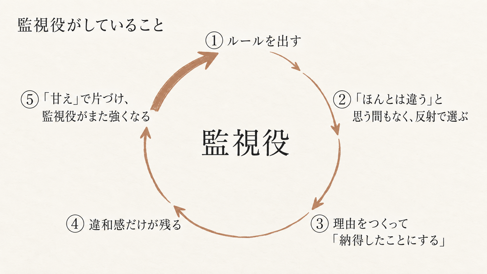
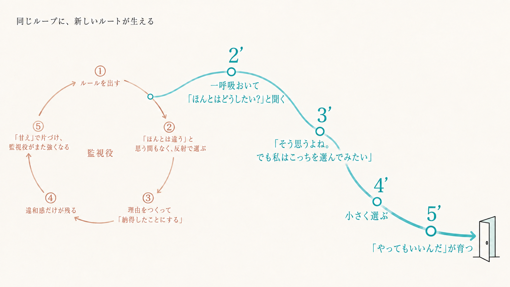

脱おりこうさん
ちゃんとしながらでも、
もっと自由に生きていい。
漢那初美
おりこうさん代表、
かんなはつみです。
フック
「ほんとはこうしたい。でも……」
最近ひとつ、
飲み込みませんでしたか？
今日持ち帰ること
今日、
持ち帰るのは3つだけ
① 自分だけで解決しても、戻る
② 真の原因は、心の中の「監視役」
③ 本当の解決策は ほどく→聴く→選ぶ
やりたいことは
ある気がする。
でも今日も、
自分は後回し。
やりたいことを、
後回しにしない。
「私は納得して選んでる」
と言える毎日。
頑張るのを、
やめなくていい。
向きを変えるだけ。
プロフィール
人が輝く瞬間が、
大好きです。
高校数学教員 約20年 → 大学院 → コーチ5年
色で、言葉にする。
ソウルカラー＝誕生日の色。
答えでなく、羅針盤。
漢那初美
本・YouTube・
講座・診断・占い・AI……
どれも、自分だけで解決しようとする方法。
Story
コーチングを学んだ。
でも、分かっていても、
同じことをしてしまった。
Story
子どもの
「大好き」さえ、
受け取れなかった。
Story
首席で学長賞。
それでも
「まだまだ」。
「あなたの心の中に、
誰が住んでいる？」
真の原因
真の原因は、
あなたの心の中に
育ってしまった、
厳しい監視役。
監視役は、
どう育った？
「ちゃんと応えたい」——
純粋な願いから始まった。
応えられたら、安心できた。
応えられないと、怖かった。
その怖さを避けるために、
自分で自分を見張り始めた。
大人になっても、その声だけが残った。
「間違えちゃいけない」

「全部終わってから」——
その「終わり」は、
いつ来ますか？
10年後も、
同じことを言っていませんか？
重要ポイント 1
① 正しそうだから、
疑わない。
疑わないうちに、
当たり前になる。
重要ポイント 2
②「ほんとは」が
小さくて、
聞こえない。
重要ポイント 3
③「ほんとは」が、
「甘え」に聞こえる。
Evidence
必要なのは、
監視役を
消すことではない。
自分の声にも、
同じだけ
席をつくること。
Original Skill
脱おりこうさんの
3ステップ
① ほどく ── ルールから解放される
② 聴く ── ほんとの願いを見つける
③ 選ぶ ── 自分の味方になる
30秒だけ、
自分の中を見てみる
「ほんとは＿＿したい。でも＿＿」
STEP 1
①「当たり前」をほどく
その「でも」は、
あなたのどんなルールを守ろうとして
出てきましたか？
STEP 2
②「ほんとはどうしたい？」を取り戻す
誰にも遠慮しなくていいなら、
ほんとはどうしたい？
どうしたいか分からないときは、
色が羅針盤になる。
STEP 3
③
親友
の声を、選ぶ
完全に味方の親友。
自分の味方として、選んでみる。
監視役の声があっても、3回に1回、小さく選ぶ。
同じループに、新しいルートが生える
2’
3’
4’
5’

「お母さんは、
泣く子が嫌なんだ」
——その受け取り方が変わって、
母に頼れるようになった。
まとめ
今日の3つ
① 自分だけで解決しても、戻る
② 真の原因は、心の中の「監視役」
③ 本当の解決策は ほどく→聴く→選ぶ
私も、
まだ途中です。
だから、
最後まで隣にいます。
気をつかえる
あなたが、
気をつかわずに
話せる相手。
はつみの分身AI「ラテちゃん」
ふつうのAI
あなた
「どうしたら、もっとちゃんとできる？」
監視役の前提のまま、質問している
AI「こうすれば、もっと頑張れます」
前提の中で答える
監視役のルールは、
聞かれないまま残る
ラテ（分身AI）
セッションで見つけたルール
ここから始まる
ラテ
「本当にそう？」
前提を問い返す
前提が、見えるようになる
覚えることと、見抜くことは違う。
今日の話に、一つでも
心当たりがあった方へ
ソウルカラーをきっかけに、
あなたを縛っている
ルールを一つ見つける90分
初回セッション 通常15,000円 →
9,800円
（税込）
＋ 分身AI「ラテ」と1ヶ月、話せます